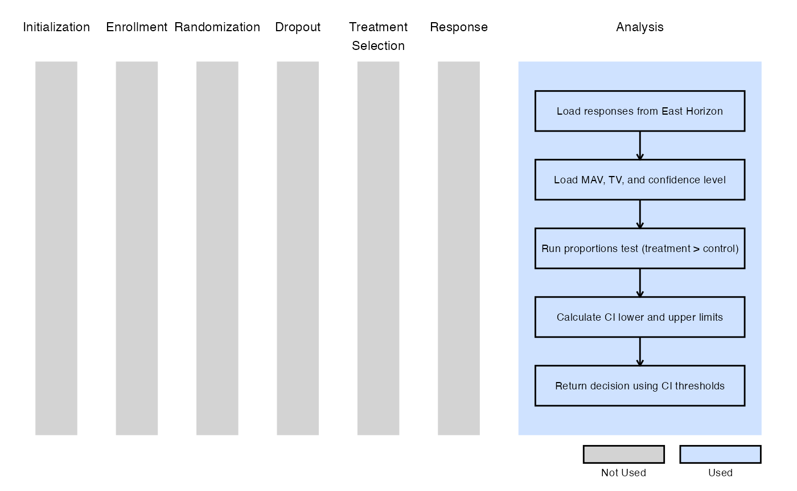
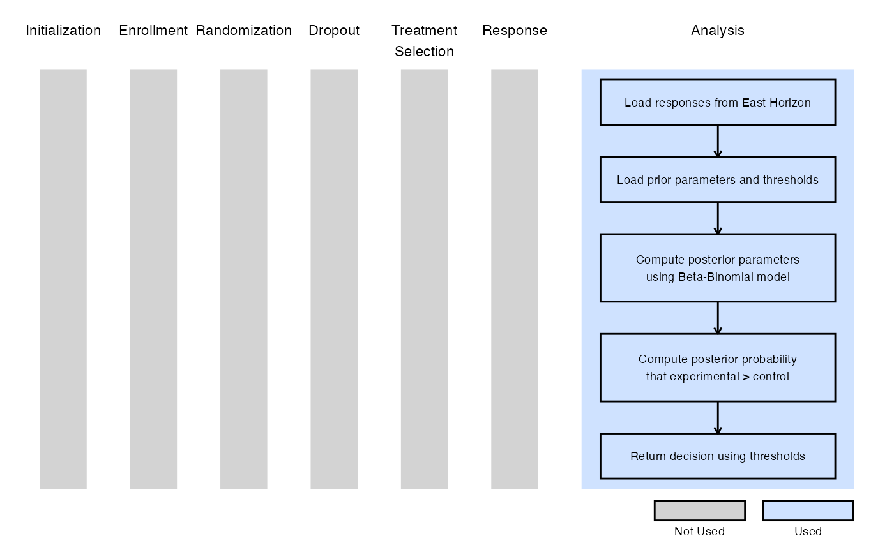

2-Arm, Binary Outcome - Analysis
J. Kyle Wathen
April 15, 2025
2ArmBinaryOutcomeAnalysisDescription.RmdThese examples are related to the Integration Point: Analysis - Binary Outcome. Click here for more information about this integration point.
Introduction
The following examples illustrate how to integrate new analysis capabilities into East Horizon or East using R functions in the context of a two-arm trial. In each example, the trial design includes a standard-of-care control arm and an experimental treatment arm, with patient outcomes modeled as binary data. The design includes two interim analyses (IA) and one final analysis (FA). At each IA, an analysis is conducted which may lead to early stopping for efficacy or futility, depending on the predefined design criteria.
Once CyneRgy is installed, you can load this example in RStudio with the following commands:
CyneRgy::RunExample( "2ArmBinaryOutcomeAnalysis" )Running the command above will load the RStudio project in RStudio.
East Workbook: 2ArmBinaryOutcomeAnalysis.cywx
RStudio Project File: 2ArmBinaryOutcomeAnalysis.Rproj
In the R directory of this example you will find the following R files:
AnalyzeUsingEastManualFormula.R - Contains a function named AnalyzeUsingEastManualFormula to demonstrate the R code necessary for Example 1 as described below.
AnalyzeUsingPropTest.R - Contains a function named AnalyzeUsingPropTest to demonstrate the R code necessary for Example 2 as described below.
AnalyzeUsingPropLimitsOfCI.R - Contains a function named AnalyzeUsingPropLimitsOfCI to demonstrate the R code necessary for Example 3 as described below.
AnalyzeUsingBetaBinomial.R - Contains a function named AnalyzeUsingBetaBinomial to demonstrate the R code necessary for Example 4 as described below.
In addition, if you would like to experiment with these examples to and would like some code to help you get started we have provided fill-in-the-blank type code files in the FillInTheBlankR directory.
Example 1 - Using Formula 24.2 from the East manual
This example is related to this R file: AnalyzeUsingEastManualFormula.R
In this example, the analysis is customized by replacing the default method with a user-defined calculation based on formulas of the Chapter 24: Binomial Superiority Two‐Sample from the East manual (24.2).
Test Statistic:
Where:
- and are the observed response rate at the jth interim look in the treatment and control groups, respectively.
- and are the numbers of patients at the jth interim look in the treatment and control groups, respectively.
- is the pooled response rate estimate.
The objective is to demonstrate a straightforward way to modify both the analysis and decision-making process. The computed test statistic is compared to the efficacy boundary provided by East Horizon or East as input. This example does not include a futility rule and does not use any user-defined parameters.
The figure below illustrates where this example fits within the R integration points of Cytel products, accompanied by a flowchart outlining the general steps performed by the R code.

Example 2 - Using the prop.test() Function in R
This example is related to this R file: AnalyzeUsingPropTest.R
This example utilizes the base R prop.test() function to
perform the interim and final analyses. The p-value is used to compute
the Z-statistic, which is compared against the efficacy boundary
provided by East Horizon or East. Like Example 1, this example does not
include a futility rule and does not use any user-defined
parameters.
The figure below illustrates where this example fits within the R integration points of Cytel products, accompanied by a flowchart outlining the general steps performed by the R code.

Example 3 - Utilization of Confidence Interval Limits for Go/No-Go Decision-Making
This example is related to this R file: AnalyzeUsingPropLimitsOfCI.R
In many Phase II trials, Go/No-Go decisions are made based on whether a treatment shows sufficient promise to justify further development. These decisions are often guided by two key thresholds:
- Minimum Acceptable Value (MAV): The smallest treatment effect considered meaningful.
- Target Value (TV): A highly desirable treatment effect based on clinical or strategic considerations.
This example demonstrates how to approximate probabilistic
decision-making using frequentist confidence intervals (CIs), ignoring
the boundaries provided by East Horizon or East in favor of a CI-based
logic. We use the function prop.test() from base R to
analyze the data and compute the desired confidence intervals. If the
treatment difference is likely to exceed the MAV, a Go decision is made.
If not, and it is unlikely to exceed the TV, a No-Go decision is made.
Specifically:
At Interim Analysis
- Let LL and UL be the lower and upper limits of the confidence interval for the treatment effect.
- If
- If
- Otherwise Continue to the next analysis
At Final Analysis
- If
- Otherwise No-Go
Refer to the table below for the definitions of the user-defined parameters used in this example.
| User parameter | Definition |
|---|---|
| dMAV | Minimum Acceptable Value: the smallest treatment effect considered clinically meaningful to warrant further development. |
| dTV | Target Value: the desired treatment effect that would represent a strong clinical benefit or strategic advantage. |
| dConfLevel | Confidence Level: the level of confidence used to construct the confidence interval for Go/No-Go decision-making (e.g., 0.80 for an 80% CI). |
Note: In this example, the boundary information that
is computed in East Horizon or East is ignored. User-defined parameters
and the function prop.test() from base R are used to
analyze the data and compute the desired confidence intervals.
The figure below illustrates where this example fits within the R integration points of Cytel products, accompanied by a flowchart outlining the general steps performed by the R code.

Example 4 - Bayesian Analysis
This example is related to this R file: AnalyzeUsingBetaBinomial.R
This example illustrates how prior data on patients can be incorporated directly into a Bayesian model. The user can specify Beta prior distributions for both the standard of care and experimental arms, as well as set decision thresholds for efficacy and futility. Refer to the table below for the definitions and values of the user-defined parameters used in this example.
| User parameter | Definition | Value |
|---|---|---|
| dAlphaCtrl | Alpha parameter of the Beta prior for the control group. | 10 |
| dBetaCtrl | Beta parameter of the Beta prior for the control group. | 40 |
| dAlphaExp | Alpha parameter of the Beta prior for the treatment group. | 0.2 |
| dBetaExp | Beta parameter of the Beta prior for the treatment group. | 0.8 |
| dUpperCutoffEfficacy | Upper threshold for declaring efficacy (between 0 and 1). If the posterior probability exceeds this value, efficacy is declared. | 0.95 |
| dLowerCutoffForFutility | Lower threshold for declaring futility (between 0 and 1). If the posterior probability falls below this value, futility is declared. | 0.10 |
In this example and with the values specified above, the prior data includes 10 responders and 40 non-responders. Let denote the response rate under the standard of care, and the response rate under the experimental treatment. The prior distributions are defined as:
- : implies a prior mean of 20%, equivalent to observing 50 prior patients with 10 responses.
- : implies a prior mean of 20%, but corresponds to just 1 prior patient, reflecting a weakly informative prior.
The Beta distribution is conjugate for binary (binomial) data, making it convenient for Bayesian updating. Suppose and patients have enrolled in the control and experimental arms, respectively, and we observe at an interim analysis:
| Treatment | Number of Responses | Number of Treatment Failures |
|---|---|---|
| Control | ||
| Experimental |
The posterior distributions for the response rates become:
For analysis and decision-making, the posterior distributions are used to determine whether to stop the trial early. The trial is stopped for efficacy if there is strong evidence that the response rate in the experimental group is higher than in the control group, and for futility if there is little evidence to support a benefit of the experimental treatment over the standard of care. The primary quantity of interest is the posterior probability that the experimental treatment has a higher response rate than the standard of care:
Specifically,
At Interim Analysis
- If Make an early efficacy (Go) decision.
- If Make an early futility (No-Go) decision.
At Final Analysis
- If Make an efficacy decision.
- Otherwise Make a futility decision.
Note that the above values can be user-specified. This example demonstrates how incorporating prior information on can influence decision-making during a trial. However, it is essential to conduct sensitivity analyses to assess how the choice of priors affects operating characteristics and overall conclusions.
The figure below illustrates where this example fits within the R integration points of Cytel products, accompanied by a flowchart outlining the general steps performed by the R code.
